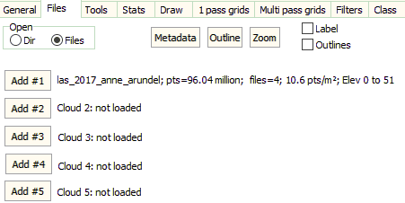

|
 |
Files list tab. List of files to be used.
- Open
- Directory, try to open all files in the directory
- Files, select files to open. Do this only if you can
readily identify the files you want.
- Metadata: Display Metadata for the files. If there are a
lot of files, you probably only want to look at a few.
- Outline tiles on the current map
- Zoom: restrict map to just area covered
by the point cloud.
- On Map: only open tiles that are on the
map. If you zoom out, other tiles will not automatically appear.
- Zoom to cloud: if set, the map will zoom to the area covered by
the first point cloud you load
- If you are not sure of the area covered by the point clout, this is
a fast way to get to the region and explore the date.
- If you will load multiple clouds, and the later clouds
might not cover the same area, you probably do you not want this
option.
- Label: Label the tiles. You might
have to adjust the map colors to see them.
- Outlines: always outlline the tiles when redrawing
- Immediate map: if you have a huge number of tiles, you can turn
this off and subset the map based on what it shows and pick a
smaller area of interest before doing any drawing. The saves
waiting for a long time for the map to draw.
- Add #1, #2, #3, #4 Pick individual files/directories to included. You can
open multiple point clouds, and turn them on and off rapidly.
|